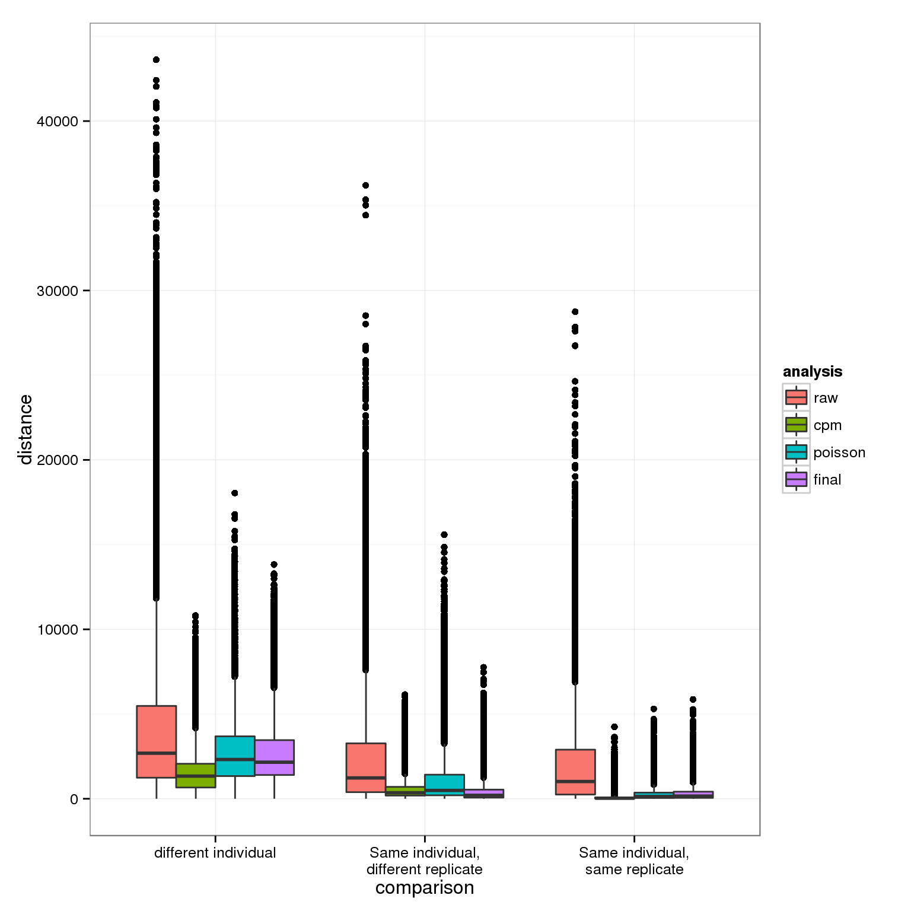

Last updated: 2016-04-24
Code version: 74f30e4e4b6c6fea3667336da91b01fb5603564f
library("HDMD")
library("ggplot2")
theme_set(theme_bw(base_size = 12))
library("tidyr")Needs to be run after the [data transformation analysis][data-transformation.html] because it uses the PCA results. We want to demonstrate the effect of our normalization steps on the technical variance as observed in the PCA plots.
Input filtered annotation.
anno_filter <- read.table("../data/annotation-filter.txt", header = TRUE,
stringsAsFactors = FALSE)
head(anno_filter) individual replicate well batch sample_id
1 NA19098 r1 A01 NA19098.r1 NA19098.r1.A01
2 NA19098 r1 A02 NA19098.r1 NA19098.r1.A02
3 NA19098 r1 A04 NA19098.r1 NA19098.r1.A04
4 NA19098 r1 A05 NA19098.r1 NA19098.r1.A05
5 NA19098 r1 A06 NA19098.r1 NA19098.r1.A06
6 NA19098 r1 A07 NA19098.r1 NA19098.r1.A07Input PCA results from [data transformation analysis][data-transformation.html].
pca_raw <- read.table("../data/pca-molecules-filter.txt",
header = TRUE, sep = "\t", stringsAsFactors = FALSE)
pca_cpm <- read.table("../data/pca-molecules-cpm.txt",
header = TRUE, sep = "\t", stringsAsFactors = FALSE)
pca_pois <- read.table("../data/pca-molecules-cpm-trans.txt",
header = TRUE, sep = "\t", stringsAsFactors = FALSE)
pca_final <- read.table("../data/pca-final.txt",
header = TRUE, sep = "\t", stringsAsFactors = FALSE)
stopifnot(pca_raw$Obs.batch == anno_filter$batch,
pca_cpm$Obs.batch == anno_filter$batch,
pca_pois$Obs.batch == anno_filter$batch,
pca_final$Obs.batch == anno_filter$batch)First visualizing how the pairwise differences between individuals and between replicates of the same individual change after each normalization step.
pca_results <- list(raw = pca_raw[, 3:4],
cpm = pca_cpm[, 3:4],
poisson = pca_pois[, 3:4],
final = pca_final[, 3:4])
distance_results <- NULL
for (analysis in names(pca_results)) {
d <- pairwise.mahalanobis(x = pca_results[[analysis]],
grouping = 1:nrow(pca_results[[analysis]]))$distance
rownames(d) <- anno_filter$sample_id
colnames(d) <- anno_filter$sample_id
d_long <- gather(as.data.frame(d), key = "sample1", value = "distance")
d_long$sample2 <- colnames(d)
stopifnot(d_long$d[d_long$sample1 == d_long$sample2] == 0)
d_long$analysis <- analysis
distance_results <- rbind(distance_results, d_long)
}
distance_results <- separate(distance_results, sample1, into = c("individual1", "replicate1", "well1"), sep = "\\.", remove = FALSE)
distance_results <- separate(distance_results, sample2, into = c("individual2", "replicate2", "well2"), sep = "\\.", remove = FALSE)
# Remove self-comparisons
distance_results <- distance_results[distance_results$sample1 !=
distance_results$sample2, ]
# Classify by comparison
distance_results$same_ind <- distance_results$individual1 == distance_results$individual2
distance_results$same_rep <- distance_results$replicate1 == distance_results$replicate2
distance_results$comparison <- NA
distance_results$comparison[distance_results$same_ind &
distance_results$same_rep] <- "Same individual,\nsame replicate"
distance_results$comparison[distance_results$same_ind &
!distance_results$same_rep] <- "Same individual,\ndifferent replicate"
distance_results$comparison[!distance_results$same_ind] <- "different individual"
stopifnot(!is.na(distance_results$comparison))
table(distance_results$comparison, useNA = "ifany")
different individual
834760
Same individual,\ndifferent replicate
274760
Same individual,\nsame replicate
160608 Order the factors.
distance_results$comparison <- factor(distance_results$comparison,
levels = c("different individual",
"Same individual,\ndifferent replicate",
"Same individual,\nsame replicate"))
distance_results$analysis <- factor(distance_results$analysis,
levels = c("raw", "cpm", "poisson", "final"))Plot.
ggplot(distance_results, aes(x = comparison, y = distance, fill = analysis)) +
geom_boxplot()
sessionInfo()R version 3.2.0 (2015-04-16)
Platform: x86_64-unknown-linux-gnu (64-bit)
locale:
[1] LC_CTYPE=en_US.UTF-8 LC_NUMERIC=C
[3] LC_TIME=en_US.UTF-8 LC_COLLATE=en_US.UTF-8
[5] LC_MONETARY=en_US.UTF-8 LC_MESSAGES=en_US.UTF-8
[7] LC_PAPER=en_US.UTF-8 LC_NAME=C
[9] LC_ADDRESS=C LC_TELEPHONE=C
[11] LC_MEASUREMENT=en_US.UTF-8 LC_IDENTIFICATION=C
attached base packages:
[1] stats graphics grDevices utils datasets methods base
other attached packages:
[1] tidyr_0.2.0 ggplot2_1.0.1 HDMD_1.2 MASS_7.3-40 psych_1.5.4
[6] knitr_1.10.5
loaded via a namespace (and not attached):
[1] Rcpp_0.12.0 magrittr_1.5 mnormt_1.5-3 munsell_0.4.2
[5] colorspace_1.2-6 stringr_1.0.0 httr_0.6.1 plyr_1.8.3
[9] tools_3.2.0 parallel_3.2.0 grid_3.2.0 gtable_0.1.2
[13] htmltools_0.2.6 yaml_2.1.13 digest_0.6.8 reshape2_1.4.1
[17] formatR_1.2 bitops_1.0-6 RCurl_1.95-4.6 evaluate_0.7
[21] rmarkdown_0.6.1 labeling_0.3 stringi_0.4-1 scales_0.2.4
[25] proto_0.3-10